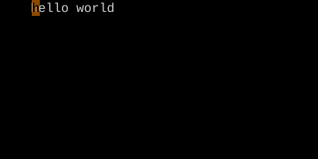

Line Motions
0 / ^ / $ — the three places that matter on a line.
0 jumps to column 0. ^ jumps to the first non-blank character. $ jumps to the end of the line. They're motions, so d$ deletes to end of line and c0 changes to start.
A line has three interesting positions: the actual start (column 0), the first non-blank character (where the code begins), and the end. Vim gives them three keys.
| Key | Note |
|---|---|
| 0 |
| Key | Note |
|---|---|
| ^ |
| Key | Note |
|---|---|
| $ |
Reference
| Key | Lands on | Type |
|---|---|---|
| 0 | Column 0 (the actual start) | Exclusive |
| ^ | First non-blank character | Exclusive |
| $ | End of line | Inclusive |
| g_ | Last non-blank character | Inclusive |
Worked example — 0 ^ $
Three flavors of line start/end.

Use ^ when you want code, 0 when you want column zero, $ to land on the last char.
See also: Delete, Change, More Ways into Insert